Unidad 1. Arquitecturas de Cómputo
INDICE
1.1 Modelos de arquitecturas de cómputo
1.1.1 Clásicas
1.1.2 Segmentadas
1.1.3 De multiprocesamiento
1.2 Análisis de los componentes
1.2.1 Arquitecturas
1.2.1.1 Unidad Central de Procesamiento
1.2.1.2 Unidad Aritmética Lógica
1.2.1.3 Registros
1.2.1.4 Buses
1.2.2 Memoria
1.2.2.1 Conceptos básicos del manejo de memoria
1.2.2.2 Memoria Principal
1.2.2.3 Memoria Caché
1.2.3 Manejo de Entrada/Salida
1.2.3.1 Módulos de Entrada/Salida
1.2.3.2 Entrada/Salida programada
1.2.3.3 Entrada/Salida mediante interrupciones
1.2.3.4 Acceso directo a memoria
1.2.3.5 Canales y procesadores de Entrada/Salida
1.2.4 Buses
1.2.4.1 Tipos de Buses
1.2.4.2 Estructura de los Buses
1.2.4.3 Jerarquías de Buses
1.2.5 Interrupciones
Modelos de Arquitecturas de Cómputo
Es el diseño y la organización de un sistema para un equipo de cómputo.
Es un modelo y descripción de cada función, así como los requerimientos y
las implementaciones de diseño para varias partes del equipo de cómputo.
Entre los modelos clásicos están:
Von Neumann
Propuesta por el matemático John von Neumann en 1945, es un modelo de diseño para computadoras
que sigue siendo la base de la mayoría de los sistemas informáticos actuales. Sus principales características son:
- Memoria Unificada.
- Ejecución secuencial.
- Unidad Central de Procesamiento (CPU).
- Almacenamiento de programas.
- Uso de un bus único.
- Ciclo de ejecución básico:
- Fetch: Obtención de la instrucción desde la memoria.
- Decode: Decodificación de la instrucción.
- Execute: Ejecución de la operación.
- Store: Almacenamiento de los resultados, si es necesario.
- Programabilidad.
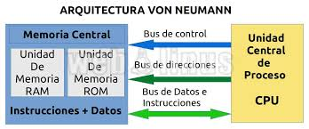
Modelo Harvard
Es una arquitectura de computadoras que separa físicamente la memoria y los buses para las instrucciones y los datos,
a diferencia del modelo Von Neumann, donde las instrucciones y los datos comparten el mismo espacio de memoria y bus.
Sus principales caractrerísticas son:
- Memoria separada para datos e instrucciones.
- Acceso simultáneo.
- Buses independientes.
- Eficiencia en sistemas embebidos.
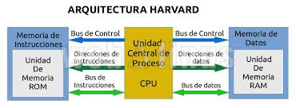
Segmentadas
Es un modelo que divide el espacio de memoria en diferentes segmentos lógicos. Cada segmento puede almacenar datos, instrucciones
o una combinación de ambos. Sus principales características son:
- Segmentación de la memoria.
- Direcciones lógicas y físicas.
- Protección y aislamiento de memoria.
- Flexibilidad en la gestión de memoria.
- Soporte para programas grandes.
- Multi-segmentación y multitarea.
- Mejora del rendimiento.
- Compatibilidad con la paginación.
Multiprocesamiento
Se refiere a sistemas de computación que utilizan dos o más procesadores para ejecutar tareas de manera concurrente, con el objetivo de
mejorar el rendimiento y la eficiencia. Sus principales características son:
- Uso de múltiples procesadores.
- Ejecución concurrente de tareas.
- Compartición de recursos.
- Mejora del rendimiento.
- Paralelismo.
- Sincronización y coherencia de la memoria.
- Escalabilidad.
- Redundancia y confiabilidad.
- Soporte para sistemas multitarea.
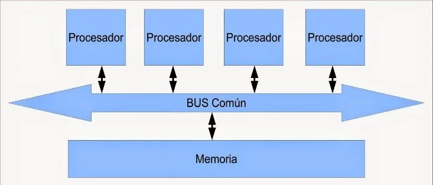
Índice
Análisis de los Componentes
Estudio de los elementos fundamentales que componen un sistema informático y cómo interactúan entre sí para ejecutar tareas.
Arquitecturas
Cisc
Es un modelo en donde los microprocesadores tienen un conjunto de instrucciones que se caracterizan por ser muy
amplio y permitir operaciones complejas entre operandos, situados en la memoria o en los registros internos.
Este tipo de arquitectura dificulta el paralelismo entre instrucciones.
Ventajas:
- Reduce la dificultad de crear compiladores.
- Permite reducir el costo total del sistema.
- Reduce los costos de creación de software.
- Mejora la compactación de código.
- Facilita la depuración de errores.
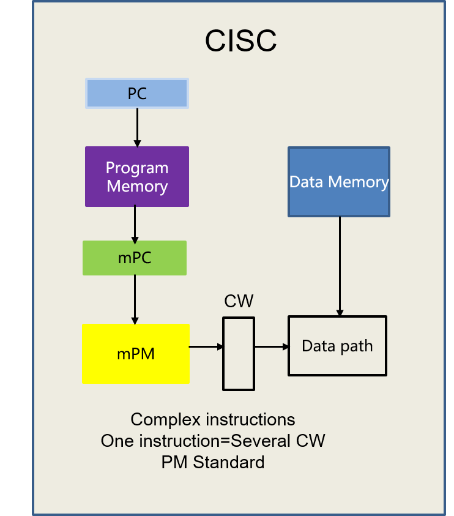
Risc
RISC (Reduced Instruction Set Computer) es un tipo de microprocesador con las siguientes características:
- Instrucciones de tamaño fijo y presentado en un reducido número de formatos.
- Sólo las instrucciones de carga y almacenamiento acceden a la memoria de datos.
- El objetivo de diseñar máquinas con esta arquitectura es posibilitar la segmentación y el paralelismo en la ejecución de
instrucciones y reducir los accesos a memoria.
- Las máquinas RISC protagonizan la tendencia actual de construcción de microprocesadores.
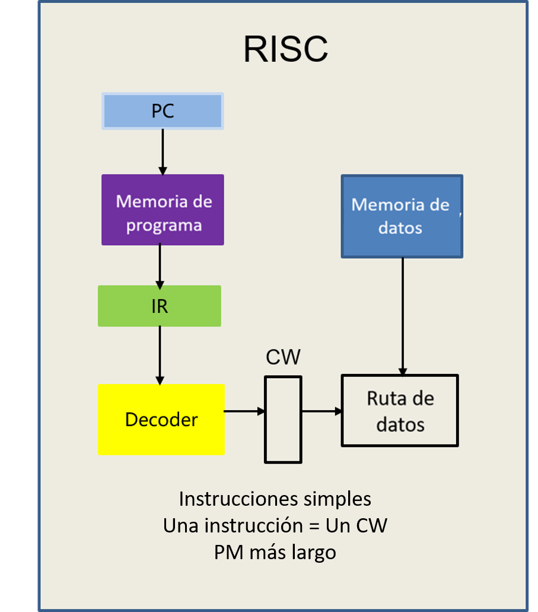
CPU
Se encarga de procesar todas las instrucciones del dispositivo, leyendo las órdenes y requisitos del sistema operativo, así como
las instrucciones de cada uno de los componentes y las aplicaciones. Componentes internos:
- Unidad de Control (CU): Interpreta y coordina las instrucciones del programa.
- Unidad Aritmético-Lógica (ALU): Realiza cálculos y operaciones lógicas.
- Registros: Pequeñas unidades de almacenamiento temporal dentro de la CPU que aceleran el acceso a datos.

ALU
Es un circuito lógico digital que realiza operaciones aritméticas y lógicas entres los datos de un circuito: suma resta, división y
multiplicación, así como establece comparaciones lógicas a través de los condicionales lógicos "si", "no", y "o". Operaciones a realizar por la
ALU:
- Suma aritmética
- Resta aritmética
- Operaciones lógicas
- Desplazamiento o rotación
- Transferencia
Es solo un operador, no puede tomar decisiones. Las entradas deben contener tanto la magnitud como el signo que corresponda
a la operación. Deberá contar con un circuito de control que le permita:
- Identificar la operación a realizar
- Administrar los recursos internos.
- Generar las banderas

Registros
Los registros que encuentran dentro de cada procesador su función principal es almacenar los valores de cada uno de los datos, comandos,
instrucciones o estados binarios que son los que ordenan qué dato debe procesarse, así como la forma en la que se debe realizar.
Tipos de resgistros:
- De datos: Guardan valores de datos numéricos, como son los caracteres o pequeñas órdenes.
- De datos de memoria (MDR): Se encuentra en el procesador y que está conectado al bus de datos. Tiene poca capacidad y una velocidad.
- De direcciones: Guardan direcciones que son usadas para acceder a la memoria principal o primaria, que solemos conocer como ROM o RAM.
- De propósito general (GPRs): Sirven para almacenar direcciones o datos generales. no tienen una función específica.
- De propósito específico (SPRs): Guardan datos del estado del sistema, como puede ser el registro de estado o el instruction pointer.
- De estado: Sirven para guardar valores reales cuya función es determinar cuándo una instrucción debe ejecutarse o no.
- Constantes: Su cometido es guardar valores de sólo lectura como son el 0, 1 ó π.
NOTA
La cantidad de tipos de registros depende de cada procesador; algunos cuentas con pocos o más de los anteriormente mencionados.

BUSES
Línea de interconexión portadora de información, constituida por varios hilos conductores o varios canales, por cada una de las cuales
se transporta un bit de información.
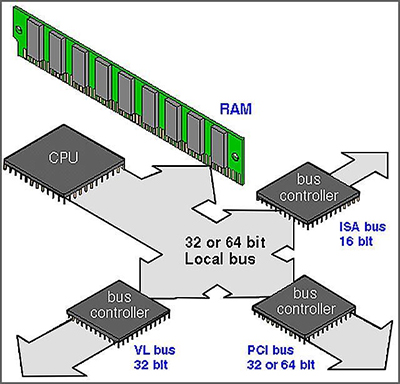
Índice
Memoria
Es un componente esencial que almacena datos e instrucciones necesarios para que la CPU ejecute programas. Existen diferentes
tipos de memoria, organizados en una jerarquía para equilibrar velocidad, capacidad y costo. Conceptos básicos:
- Manejo de memoria: Es el acto de gestionar la memoria de un dispositivo informático. El proceso de asignación
de memoria a los programas que la solicitan.
- Memoria Principal (RAM):
- Es la memoria volátil a corto plazo donde se almacenan temporalmente los programas y datos que están en uso. Se pierde
cuando el sistema se apaga.
- Proporciona acceso rápido a los datos necesarios para que la CPU realice operaciones.
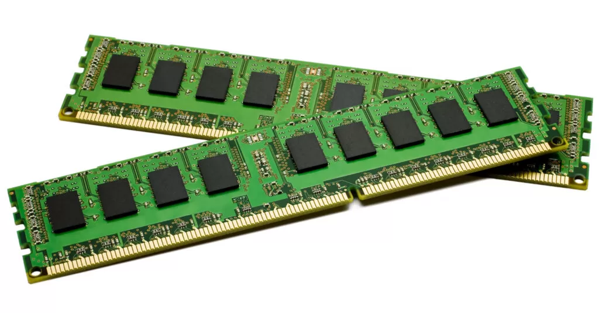
- Memoria Caché:
- Una memoria más pequeña y más rápida que la RAM, ubicada cerca de la CPU.
- Almacena los datos más frecuentemente usados, reduciendo el tiempo de acceso y mejorando el rendimiento del sistema.
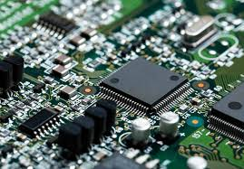
Índice
Manejo de Entrada/Salida
Es cómo los sistemas procesan y gestionan la comunicación entre la CPU y los dispositivos externos, como teclados, impresoras,
discos duros y pantallas. Estos dispositivos permiten la interacción del sistema con el entorno y el usuario.
Módulos de Entrada/Salida
Para poder hacer una operación entre el procesador y un periférico, se necesita conectar estos dispositivos a la computadora
y gestionar de manera correcta la transferencia de datos. Esto, se puede realizar mediante los sistemas de módulos de Entrada/Salida.
Estos módulos están conectados con el procesador y la memoria principal, cada uno controla uno o más dispositivos externos.
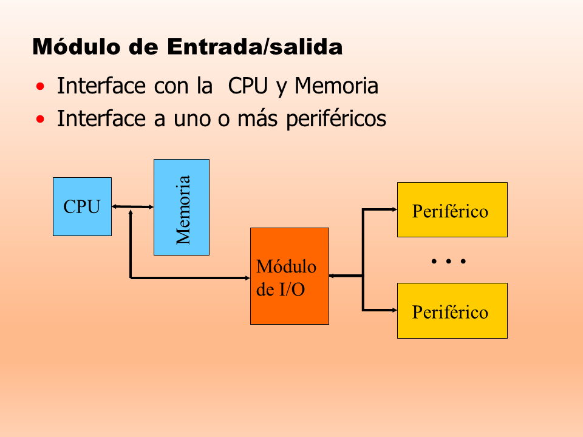
Entrada/Salida Programada
La entrada-salida programada (también entrada / salida programada , E / S programada , PIO ) es un método de transmisión de datos ,
a través de entrada / salida (E / S), entre una unidad central de procesamiento (CPU) y un dispositivo periférico , como un adaptador
de red o un dispositivo de almacenamiento Parallel ATA (PATA, anteriormente AT Attachment (ATA)). Cada transferencia de elementos de
datos se inicia mediante una instrucción en el programa, que involucra a la CPU para cada transacción. Por el contrario, en las
operaciones de acceso directo a memoria (DMA), la CPU no participa en la transferencia de datos.
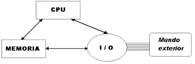
Entrada/Salida Mediante Interrupciones
es una técnica de manejo de I/O en la que los dispositivos de entrada/salida (I/O) pueden interrumpir el procesamiento normal
de la CPU para notificarle que están listos para enviar o recibir datos. A diferencia de la I/O programada, donde la CPU espera
activamente que los dispositivos completen su tarea, en este caso, la CPU realiza otras tareas y solo es interrumpida cuando el
dispositivo necesita atención.
Funcionamiento
- El procesador ejecuta instrucciones de un programa. Al finalizar cada instrucción comprueba si se ha producido una interrupción.
- En caso afirmativo se salva el estado actual del programa (contador del programa y registros) y se salta a ejecutar la rutina de servicio
correspondiente.
- La rutina de servicio efectúa las operaciones apropiadas en la E/S para realizar la transferencia de datos solicitada.
- Al finalizar la rutina de servicio se recupera el estado de la CPU y se continúa ejecutando el programa que se estaba ejecutando
antes de la interrupción.
Las interrupciones pueden ser:
- ENMASCARABLES (se pueden dejar de atender por software).
- NO ENMASCARABLES (siempre atendidas).
- Dos formas de conocer la dirección/posición (vector) donde se encuentra la rutina de servicio de la interrupción.
- Vector de interrupciones siempre FIJO ó el periférico suministra el vector de interrupción.
Acceso Directo a Memoria
El DMA (acceso directo a la memoria) permite que el dispositivo de red mueva los datos del paquete directamente a la memoria del
sistema, reduciendo la utilización de la CPU. Sin embargo, la frecuencia y los intervalos aleatorios en los cuales los paquetes
llegan no permiten que el sistema ingrese un estado de energía más bajo. El coalescentes DMA permite que el NIC recoja los paquetes
antes de que inicie un evento DMA. Esto puede aumentar la latencia de la red, pero también aumenta las probabilidades de que el sistema
consuma menos energía. Los adaptadores y dispositivos de red basados en el controlador Ethernet Intel® I350 (y controladores posteriores)
Asistencia la fusión de DMA.

Canales y Procesadores de Entrada/Salida
Los canales de E/S proporcionan una línea Ready para permitir operaciones con dispositivos de memoria o de E/S lentos. Cuando la línea
no está activada por un dispositivo, el procesador genera ciclos de lectura y escritura a memoria que toman cuatro ciclos de 210 ns
(esto es, 840 ns) por byte.
Índice
Buses
El bus es un sistema digital que transfiere datos entre los componentes de una computadora. Está formado por cables o pistas en un
circuito impreso, dispositivos como resistores y condensadores, además de circuitos integrados.
Un bus es una trayectoria por la cual viajan los datos en una computadora para comunicar los distintos dispositivos entre sí. Los
principales buses que se encuentran dentro de una PC son: los Buses del micro-procesador, los Buses de memoria y los Buses del sistema.
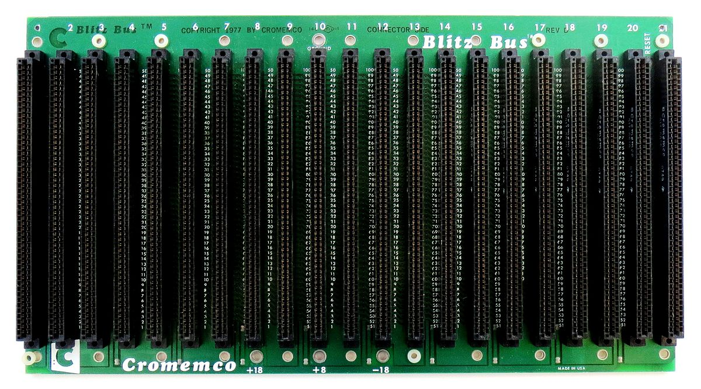
Tipos de Buses:
- Serie: El bus solamente es capaz de transferir los datos bit a bit. El bus tiene un único cable que transmite la información.
- Paralelo: El bus permite transferir varios bits simultáneamente, por ejemplo 8 bits.
Aunque en primera instancia parece mucho más eficiente la transferencia en paralelo, esta presenta inconvenientes:
- La frecuencia de reloj en el bus paralelo tiene que ser más reducida.
- La longitud de los cables que forman el bus está limitada por las posibles interferencias, el ruido y los retardos en la señal.
Además, los modernos buses serie están formados por varios canales: En este caso se transmite por varios buses serie simultáneamente.
Estructura de los Buses:
Un bus es un medio compartido de comunicación constituido por un conjunto de líneas que conecta las diferentes unidades de un
computador. La principal función de un bus será, pues, servir de soporte para la realización de transferencias de información
entre dichas unidades. Los papeles de master y slave son dinámicos, de manera que una misma unidad puede realizar ambas funciones
en transferencias diferentes. Por ejemplo, una unidad de DMA hace de slave en la inicialización que realiza el master, la CPU, para
una operación de E/S. Para garantizar el acceso ordenado al bus, existe un sistema de arbitraje, centralizado o distribuido, que
establece las prioridades cuando dos o más unidades pretenden acceder al mismo tiempo al bus, es decir, garantiza que en cada momento
sólo exista un maste
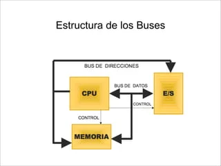
Jerarquía de los Buses:
Los computadores modernos tienen por lo menos 4 buses diferentes (bus interno, bus del procesador, bus del caché, bus de memoria,
bus local de E/S, bus estándar de E/S). Se les considera una jerarquía, porque cada bus se conecta al nivel superior a él dentro
del computador, integrando así todas las partes del computador. Cada uno es generalmente más lento que el que se encuentra sobre
él, siendo el bus del procesador el más rápido tratándose de que este es el dispositivo más rápido del computador. Para mejorar
el rendimiento del bus, las jerarquías de buses fueron implementadas cada vez más.
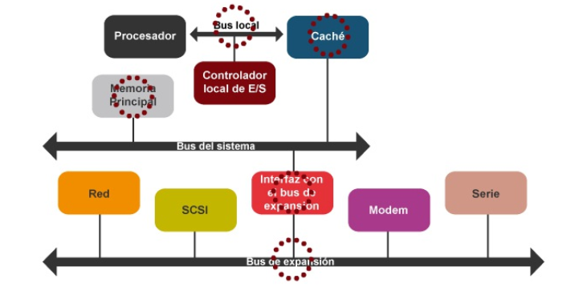
Índice
Interrupciones
Una interrupción consiste en un mecanismo que le permite al hardware la invocación de una rutina fuera del control del programa
que está siendo ejecutado. Es una señal recibida por el procesador de una computadora, que indica que debe «interrumpir» el curso
de ejecución actual y pasar a ejecutar código específico para tratar esta situación. Una interrupción es una suspensión temporal
de la ejecución de un proceso, para pasar a ejecutar una subrutina de servicio de interrupción, la cual, por lo general, no forma
parte del programa, sino que pertenece al sistema operativo o al BIOS. Una vez finalizada dicha subrutina, se reanuda la ejecución
del programa.
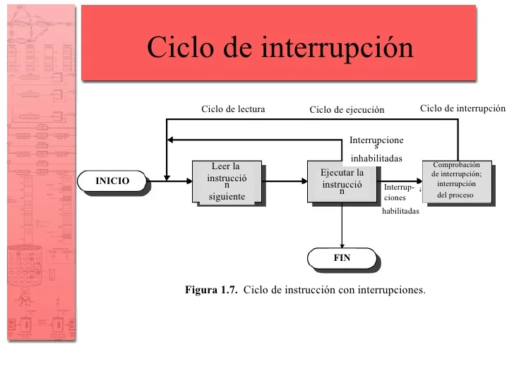
Índice